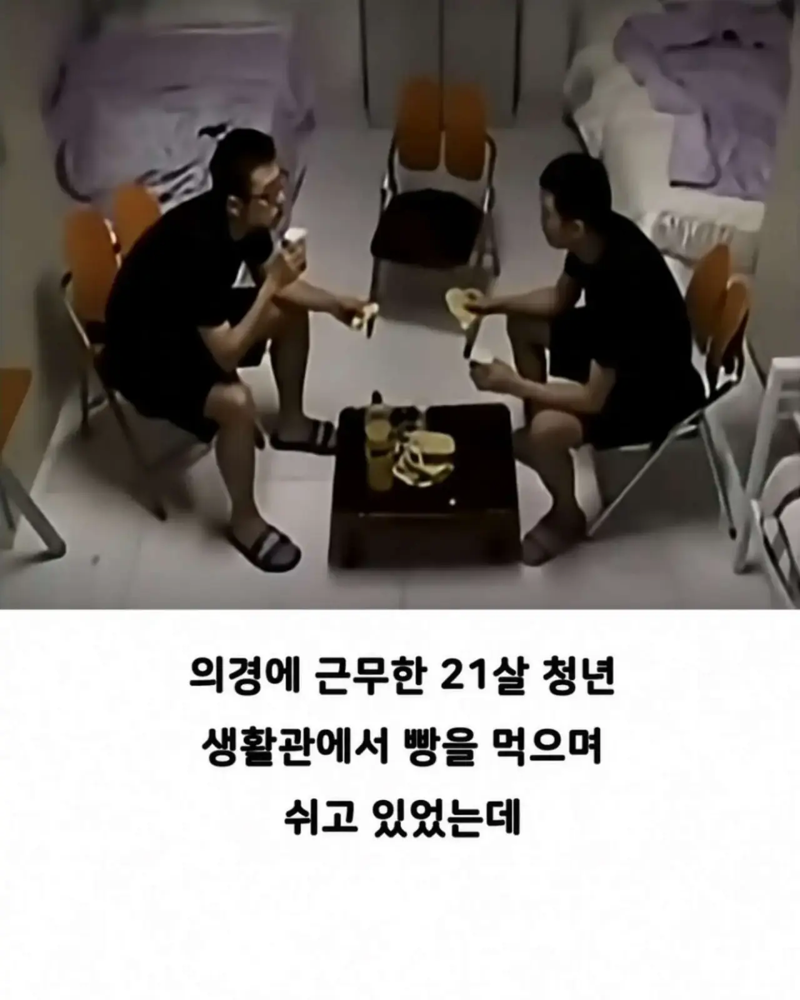
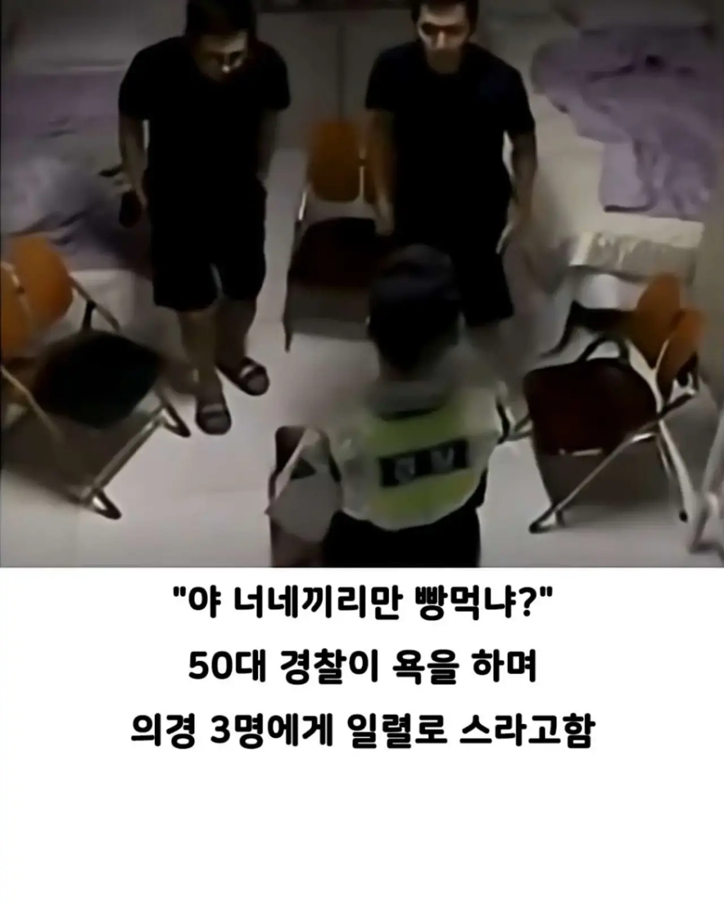
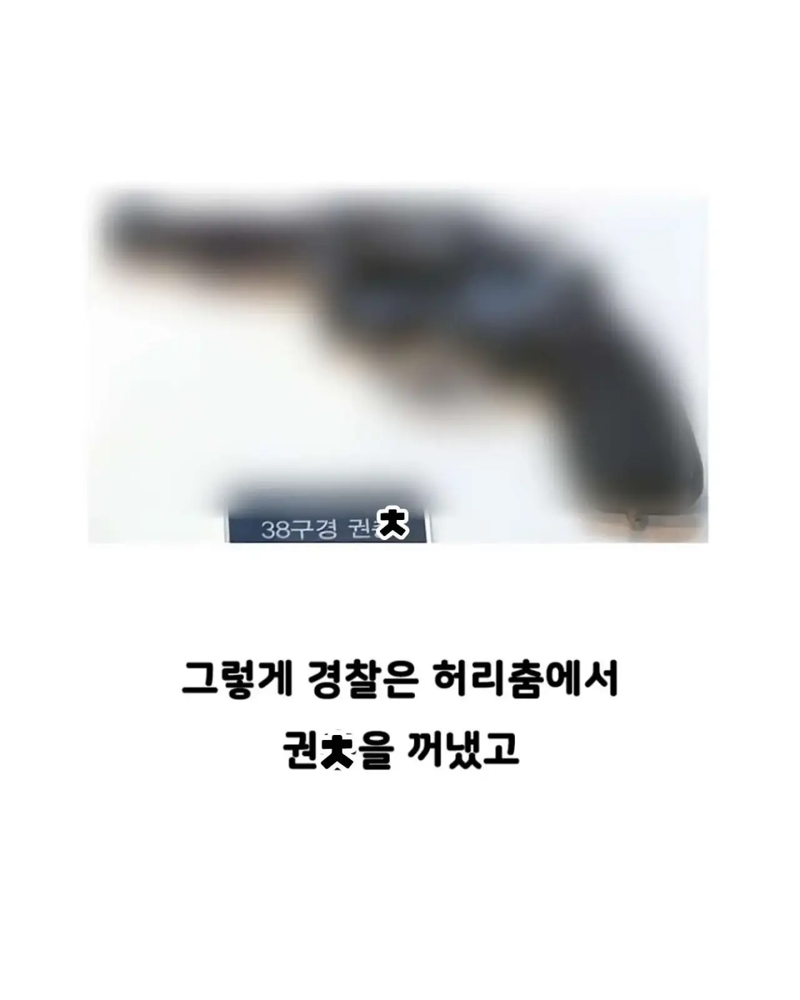
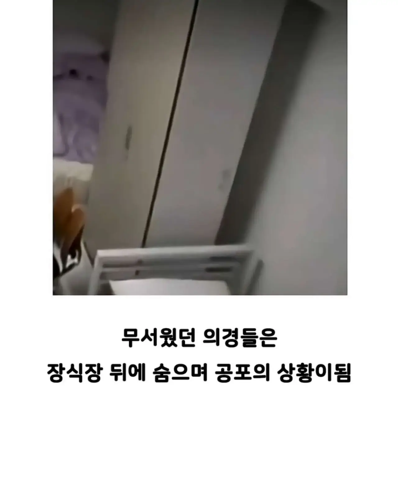
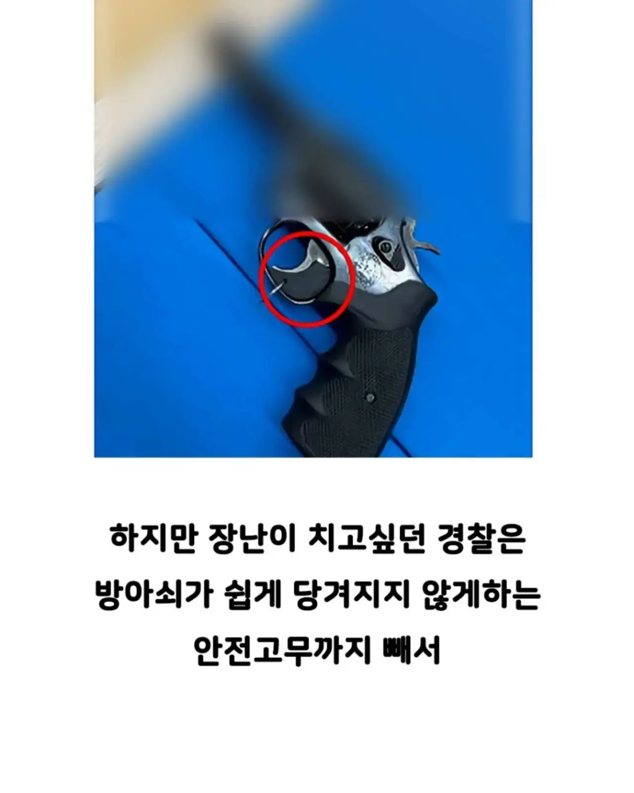
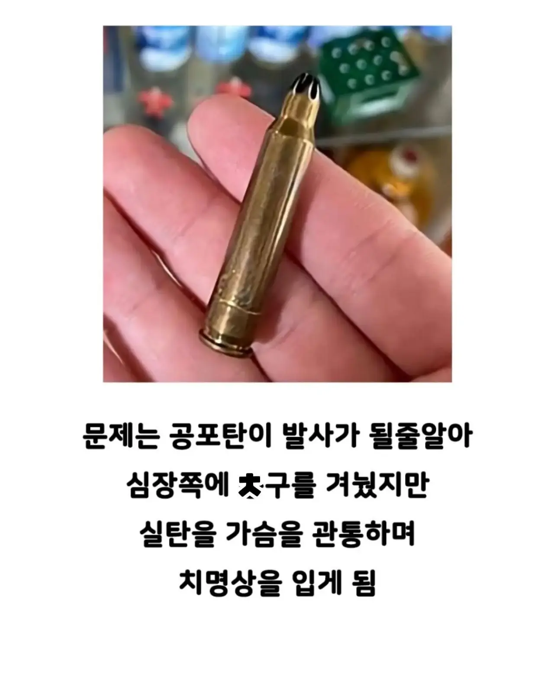
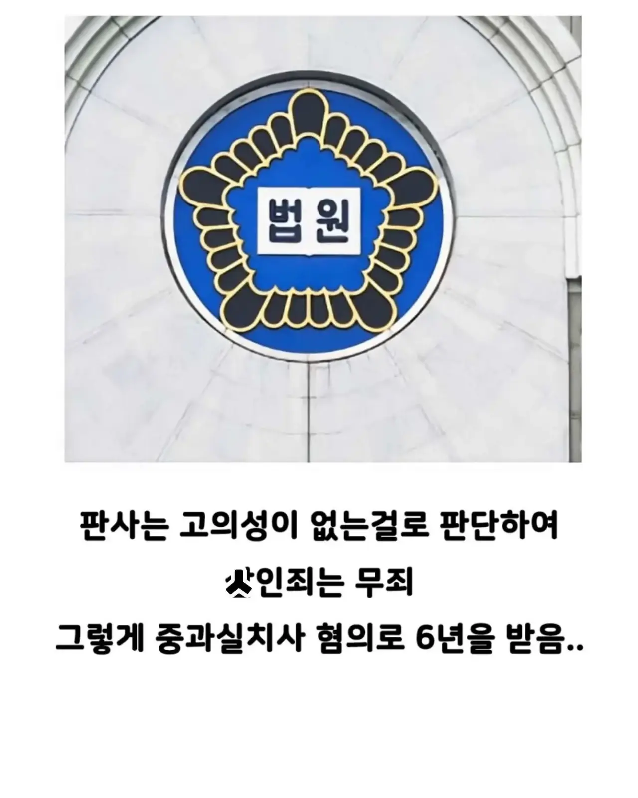
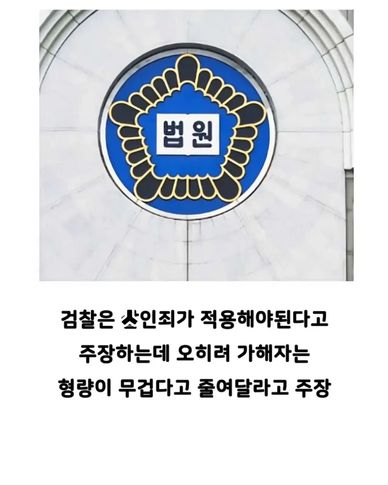
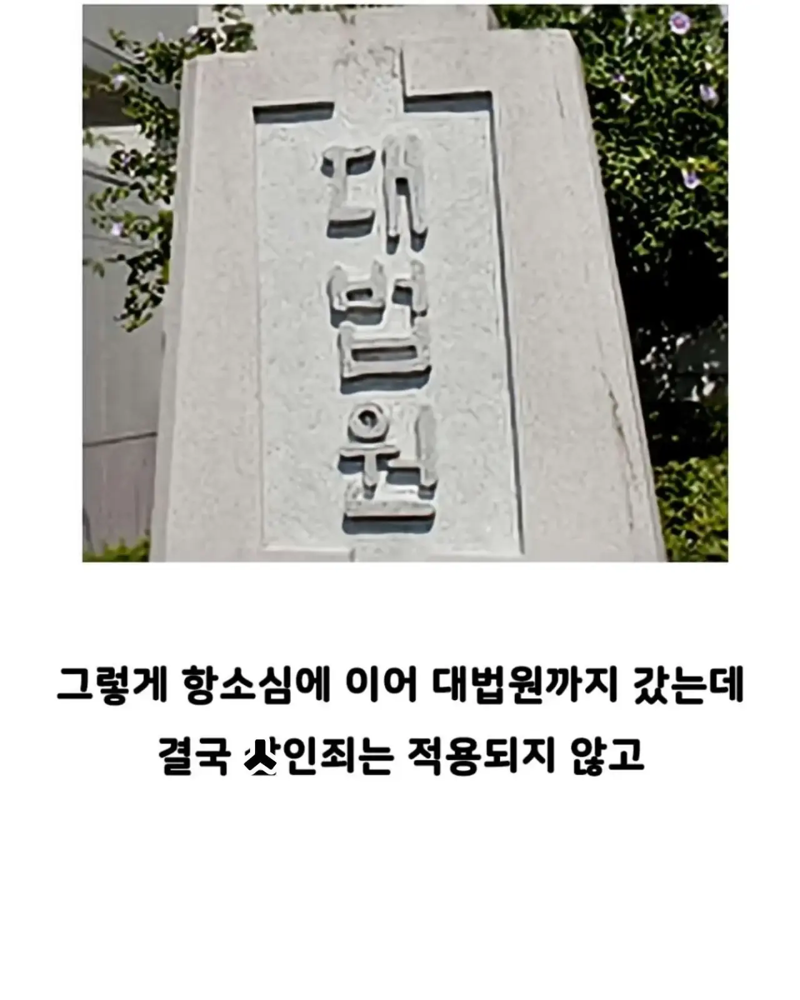

판사가 씨발이네
공포탄인줄 알았다면 과실치사가 맞지
나도 공포탄 쏘고싶당 ㅎㅎ
공포탄도 근거리에서 잘못 맞으면 죽어
? 그런식이면 딱밤도 잘못때리면 사람죽어 ㅋㅋㅋ
형 공포탄을 거기에 비교하는건 좀 아닌거 같아
왜때림? 딱밤만때려도 폭행임
미친놈들 천지네
어떤 탄알이든 고의로 안전장치 다 풀고는 ㅅㅂ
과실치사 부정하는 애들은 뭐냐ㅋㅋ 독심술이라도 쓰냐ㅋㅋㅋ 실탄인줄 인지하고 쐈겠냐 지 인생도 조지는건데ㅋㅋ
안전고리 뺐을 때 그 주장도 힘을 잃는거야
총을 다른사람에게 겨누고 방아쇠를 당긴다는게 뭘 의미할까..?
기본적인 원칙들이 왜 존재하는지 모르는 병신들...
아무리 과실치사라 해도
일반인도 아니고 경찰이라는 전문직이 만의 하나도 생각안하고 총겨눔, 안전장치제거, 공포탄이더라도 심장을 향해 총을 발포함 이게 6년이면 좀;;
실탄이 장전된 총을 겨누는 것 or 안전장치를 빼지 않았음에도 오발사고 발생했다면 여기까진 중과실치사라고 생각하는데
안전장치를 빼고 격발 누른건 살인죄 아니냐?
뇌가 명령을 내려 손가락을 움직여야만 발사가 되는 구조잖아
군필 기준 의도가 매우 명확한데?
위에 변호사등판했던데 꼭 본인또는 가족, 주변 지인이 그렇게 뒤지길 바랄게요 ㅎㅎ
인성에 이중잣대질이 기본인 인생쓰래기루트탄 새끼들임
군생활 한다고 고생한다고 목막히지말라고 우유나 음료수 사주지는 못할 망정 못난놈이구만
이게 왜 미필적고의가 적용 안되지
판례 찾아봐야겠네
미필적고의는 사전에 죽을리스크가 생긴다고 인지한다음 감수해야됨. 아마 본인이 나가더라도 실탄이 발사될 가능성이있다고 알았지만, 상관없다고 생각했다 라는걸 입증해야되는데 실패했을듯
볼때마다 안타까운 사건
미친 또라이새끼네
솔직히 과실치사죄 형량이 너무 약함 의도가 어쨌든 사람이 죽은건데
장난으로 실수로 했다고 살인이 뭐 살인이 아니게 되나? 말이야 방구야? 이게
전경 출신이고 경찰서에서 군생활했는데 진짜 개쓰레기 새끼들 존나 많음
과실치사는 맞음
살인의 고의가 없었는건 충분히 입증가능함
문제는 중과실치사 법정형이 시발 5년이하의 금고? 이게 시발 문제임
결론 판새(X) 국개의원(O)
이제 모든 총기사고는 공포탄인줄 알았다 하면 되겠네
궁굼한게 공포탄은 저렇게 장난으로 막 쏴도 되나
CCTV에 공포탄빼고 전부다 실탄으로 장전하는게 찍혔다든가 이런 결정적인 증거가 없다면
저 상황에서는 살인죄는 입증이 매우 어려움
고의를 입증해야하는데 그 고의입증이 어려운걸 저 경찰도알고있고
법을 매우 잘 활용한 사례라고 볼수있음
장난으로 경찰서에서 공포탄을 쏜다고? 총소리가 장난인가? 서장까지 달려나올텐데?
총 다루는 사람은 빈총이라도 사람한테 겨누면 ㅈ된다는걸 뼈에 새길텐데 역시 견찰은 다른가
사람한테 총을 겨눈게 고의가 아니다 총이 군대랑 경찰한테만 있는 나라라서 대충하나
저거 재판 참여한 새끼들 싹다 미필임? 총구는 장난으로라도 사람한테 향하면 안된다고 군대에서 안배움?
심지어 그냥 총구만 향한것도 아니고 사람한테 겨냥하고 쐈는데 공포탄인줄 알았어요가 말이 되냐 씨발
공포탄이고 실탄이고 사람을 조준하고 방아쇠를 당겼다는게 놀랍네
애초에 군대든 어디든 총기는 기본적으로 절대 사람한테 겨누지 말라고 교육하지 않음?
그거 어기고 지가 조준하고 눌렀으면
죽이려고 했든 정말 사고든 우발적 사고가 아니라
살인죄로 가야지 ㅋㅋㅋㅋ
그럼 뭐 둔기로 사람 머리 깨서 잡혀온 사람이
그냥 화가 나서 적당히 겁줄정도로만 살살 휘둘렀는데
죽을줄 몰랐다 하면 이것도 그낭 과실치사겠네?